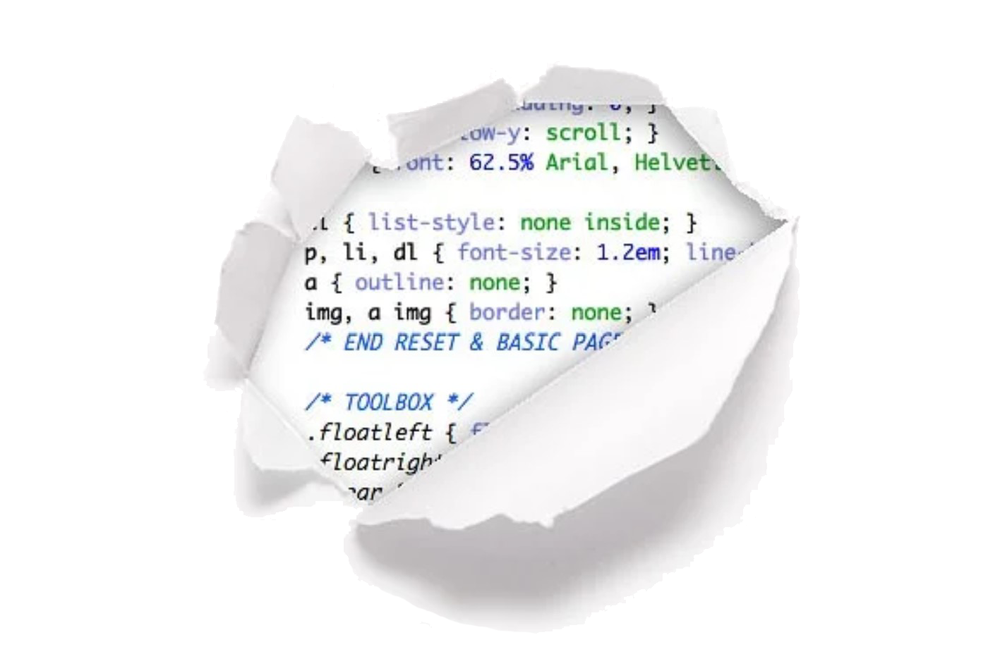

DIGIT Web Homebase
Digital Media, Arts, and Technology at Penn State Behrend
Home
|
About
|
Modules and Minors
|
DIGIT Course Roadmap
|
Student Project Showcase
Oops!
Looks like you've clicked a link that doesn't exist...
yet.
